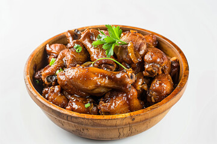

Adobo is a popular Filipino dish that is made by marinating meat, usually chicken or pork, in a mixture of vinegar, soy sauce, garlic, bay leaves, and black peppercorns.
The meat is then simmered until tender and flavorful. Adobo is often served with steamed rice and is known for its rich and savory taste.
This dish is highly celebrated because it tastes even better the next day as the flavors continue to meld together. It is traditionally served hot over a generous bed of fluffy,
steamed white rice, which perfectly balances the intense and savory sauce.